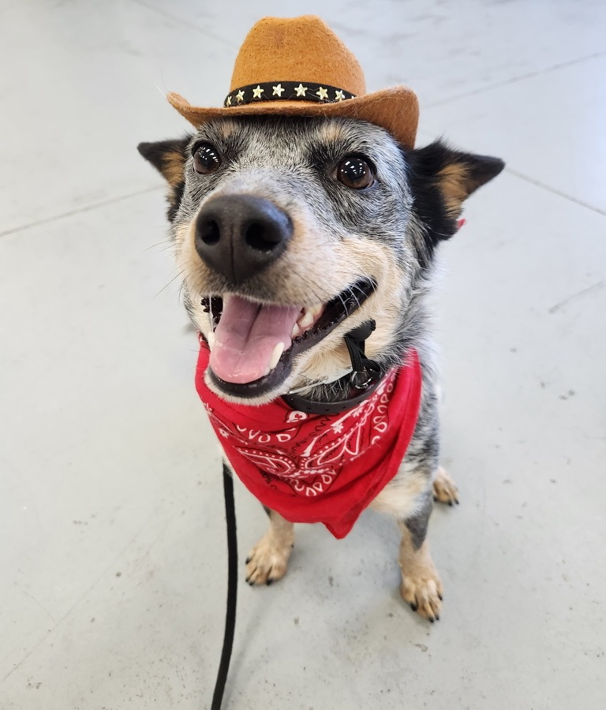

No article found
Dollypedia has failed you in this very narrow moment. Try a simpler search term.
House + Dolly field guide
A friendly, large-print cheat sheet for Dolly, the house, and the tiny mysteries that are easier when they are written down.

Dollypedia has failed you in this very narrow moment. Try a simpler search term.